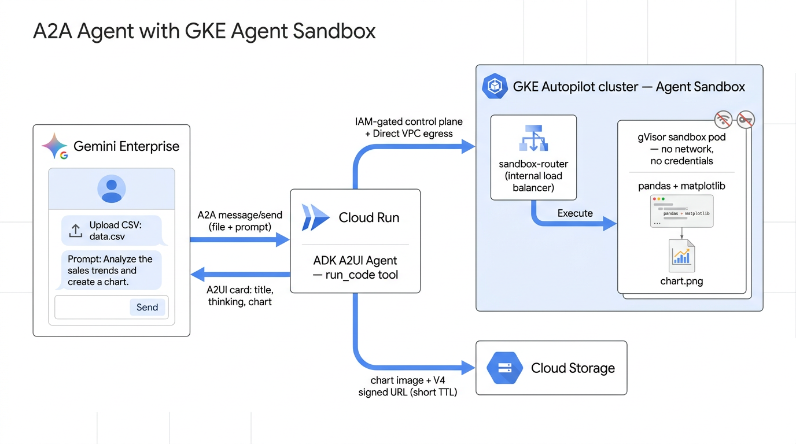

Let agent skills run untrusted code safely — and render the result back in Gemini Enterprise.
Cloud Run · ADK · A2A GKE Agent Sandbox · gVisor A2UI in Gemini Enterprise
google-agents-cli). It scaffolds the agent, A2A wiring, Terraform, deploy and
publish flow — roughly 80% less time than wiring it all by hand.
uv tool install google-agents-cli
agents-cli playground # local
agents-cli deploy # to Cloud Run
agents-cli publish gemini-enterprise --registration-type a2a ...Strong gVisor isolation for untrusted, LLM-generated code.
Sandboxes in <1s — far faster than normal Pod scheduling.
Stable hostnames for single-replica workloads, no StatefulSet pain.
Pre-warmed Pods assigned instantly instead of cold starts.
Request & drive sandboxes straight from app logic.
Source: cloud.google.com/kubernetes-engine/docs/concepts/machine-learning/agent-sandbox
Upload marketing_campaigns_sample.csv and ask:
"Use the data-analysis skill: bar chart of total spend_usd by campaign_name, ascending."
→ a card appears inline: a title, the model's thinking, and the chart.
Then, no re-upload: "now make it a pie chart" — the file persists across turns (stashed in GCS by conversation, re-hydrated into each fresh sandbox).

Drop a nano banana–generated PNG at docs/slides/assets/architecture.png.
The prompt is in docs/slides/assets/README.md.
completions_view.tool_call and its
tool_response, tokens, finish_reasons — exactly what the model saw and produced.conversation_id; ordered by timestamp · message_idx · part_idx.SELECT timestamp, role, part_type, tool_name, content
FROM `…a2a_with_gke_sandbox_telemetry.completions_view`
ORDER BY timestamp DESC LIMIT 10;Powerful — but reading a run as flat SQL rows is hard. So…
A tiny local GUI over that view — tools/session-viewer/:
content / tool_args / tool_response.cd tools/session-viewer
uv run streamlit run app.py
# → http://localhost:8501↳ live demo: open a recent session, walk the timeline,
click into the run_code and send_a2ui calls.
↳ live in the editor — the few files that carry the whole flow (see the README):
app/agent.py — the run_code tool, skill loader, file hooks, the
placeholder→signed-URL + unique-surfaceId before_tool_callback.app/a2ui_support.py — the legacy executor that emits the result as a
task artifact, the pinned v0.8 catalog, the A2UI converter.app/sandbox/ — client.py (fresh sandbox per request),
kube_auth.py, signed_url.py, session_files.py (cross-turn uploads).README.md — the End-to-end journey + Gotchas sections tie it together.github: practical-gcp-examples / a2a-with-gke-sandbox